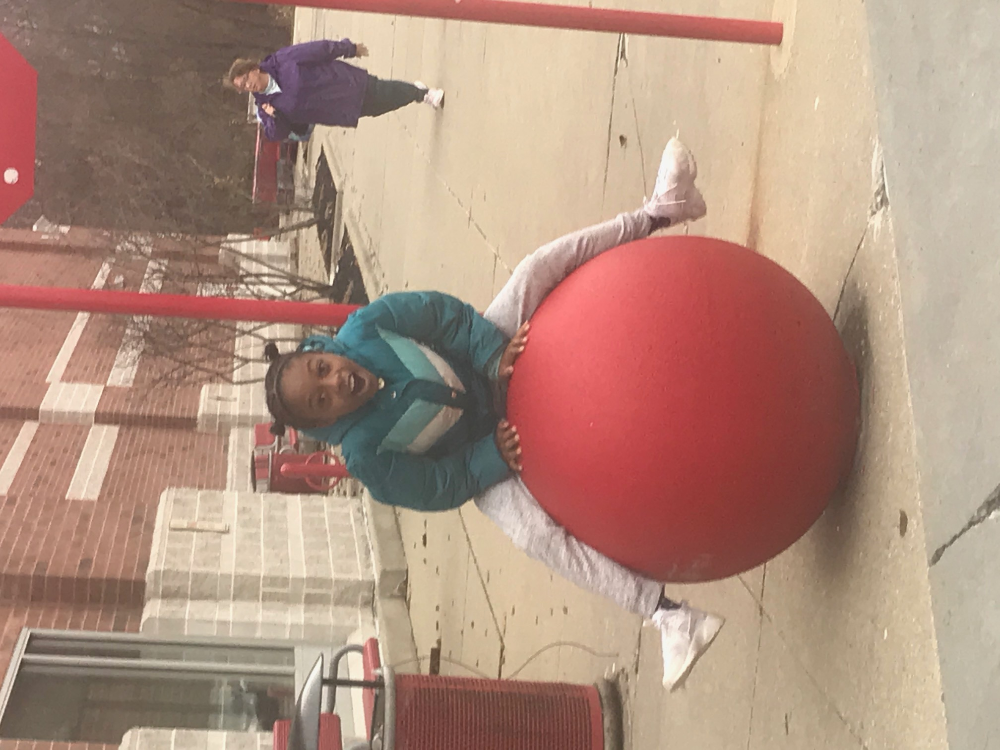

Kooky Kaya
Katrina HicksThis is my grandaughter Kaya. She is by far the kookiest kid I know! She loves having fun and acting CRAZY!!! While we were out shopping at Target, she jumped onto the Target display ball and just started acting kooky! I had to take a picture of the event. I'll show her this picture again when she's about 20 or so to remind her of how kooky she used to be as a child.
Kaya
Kaya loves to do kooky singing and kooky dancing! She will turn anything into a microphone and then commence to kooky dancing and singing. The way she bounces her head back and forth as she sings and dances is so hillarious. While she isn't that good at singing, I must admit that she is a terrific dancer. Her moves are skillful and she practices daily to perfect them. I'm glad she's a kooky girl because she makes me laugh all the time!